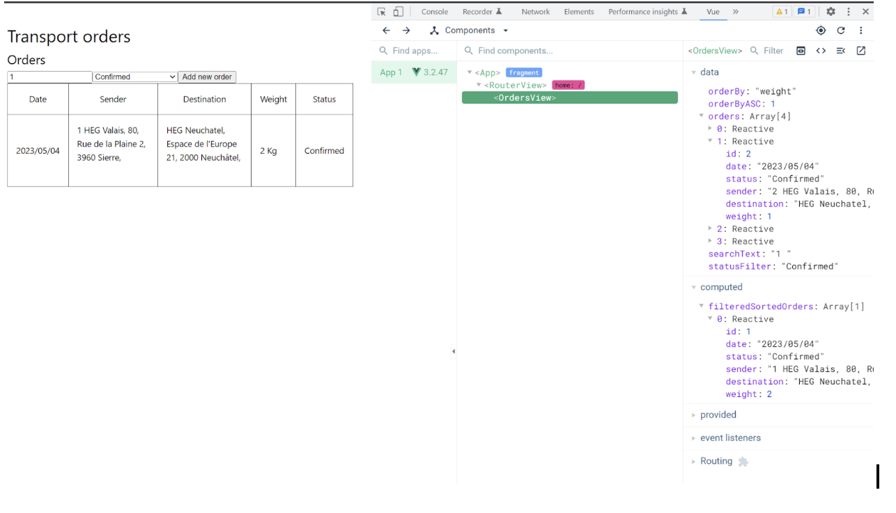

Objectif: You will build a small tool to manage orders of a delivery company.
This time you will develop in a development environment with multiple files and tools to assist the development process: web server with auto reload, linting and more.
First you will setup this environment, (some parts are already done for you). Then we will get into the requirements for the small application.
You need to have the following tools installed:
- Download and install Node.js to get
npm. - Download and install Git to get
git. - Download and install Visual Studio Code to get
code.
Check that it works from the shell:
$ git --version git version X.Y.Z $ node --version vX.Y.Z $ code --version X.Y.Z ... x64
Vue Devtools will allow you to debug Vue variables and computed easily.


To get you started the senior developer of the project has already created the initial development environment. Create your own copy:
Accept the assignment
Refresh the page until you see a link
Clone your project
Change directory to your cloned folder vuejs-exercises-level2-
Use the node package manager to Install the required dependencies (from the project's package.json file)
npm install
Run the development server (which has auto-reload)
npm run dev
Hint: Ctrl-C to exit
This project is setup with two linter to help use follow best practice in code formatting and quality:
- ESLint for code quality
- Prettier for code formatting
Run the following command to auto fix formatting and see errors.
npm run lint npm run format
This project has been created with the create-vue application and uses Vue Single-File Components (sfc, the *.vue files). It allows to have javascript, html and css in a single file while style separating concerns.
Additionally, this project setup uses vue-router to have multiple client side virtual pages without using a server.
The two files you will need to edit are:
Path | View |
/ | src/view/OrdersView.vue |
/add | src/view/OrderAdd.vue |
The starting code of view has been further split into multiple files
File | Description |
index.html | The html outside of the vue app (should not be edited, except for icon and title) |
main.js | The main entry point where the vue app is created and configured with plugins like vue-router |
src/App.vue | The main Vue View, think of it as the layout of your site. |
Start coding!
The application manages the delivery of parcels.
A Delivery has following attributes:
Name | Type |
Date | String (yyyy/mm/dd/) (might depend on your system locals) |
Sender | String |
Destination | String |
Weight | Number in Kg |
Status | "Confirmed", "In delivering", "Delivered" |
Getting started
Create a table to display all orders in OrderView.vue. The "initial" orders data are hard-coded in order to implement filtering and sorting.
Functionalities:
Filtering
- The search box will filter the orders, searching at least in the sender and destination fields
- A drop down should allow to filter on status ("All Status"== no filter, "Confirmed", "In delivering", "Delivered")
Sorting:
- Column headers allow sorting the orders. The sort order toggle on each click of the same column (ascending first then descending)
Implement persistence by saving and reading the order list to localStorage.
Functionalities:
- The first time the application loads, reading the data from localStorage will be empty. In this case populate the list with sample data.
- Otherwise restore the version from localStorage
- To test your code implement the delete functionally with a button to allow deleting a specific row.
Clicking on the "Add new order" button, switches to a new view (page).
This page displays a form allowing to add a new order:
Functionalities:
- A warning message is shown if the fields are not all filled
- A warning message is shown if the weight is less than or equal to 0 kg
- When the "Save" button is clicked, the order is added to the stored orders and the application switches to the orders list (main page)
- When the "Cancel" button is clicked, the application switches back to the orders list
Congratulations, you covered all the basics for today!
If you want you can continue with the following suggestions:
- Allow to change the status directly in the list of orders view
Learn more about components in the tutorial and try to transform a table row into a component.
This will be useful for bigger projects as well as understand how third party components libraries work.